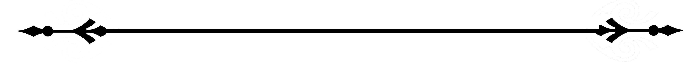

Также умею управляться с осциллографом, генератором сигналов,
и паяльником умело орудую!
Курс "Цифровая обработка сигналов", НАУЧНО‑ОБРАЗОВАТЕЛЬНЫЙ ЦЕНТР
АО «Северо-Западный региональный центр Концерна ВКО «Алмаз‑Антей» -
Обуховский завод»
Постоянного хобби нет, но я в активном его поиске!
В школьные годы я познакомилась с программистом и решила,
что если уж на кого и учиться, то только на программиста...
В итоге:
Ну а сейчас я уже не просто программист, а разработчик!
Телефон: 5554445
E-mail: lapshenkovagalina@gmail.com
Telegram: toolazyperson